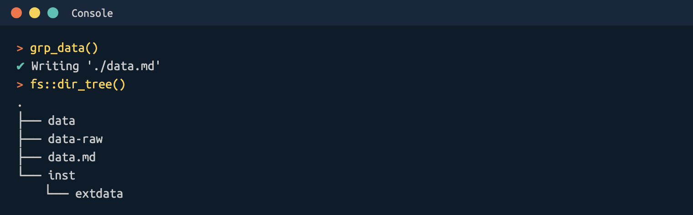

Good enough data
data.Rmd
grp_data()
Use grp_data() to create the data folders in your R
projects:

The grp_data() creates three folders and a
data.md file.
data-raw/: should contain any code used to import, download and include data in your projectdata/: should contain processed, intermediate, or otherwise altered data in your projectinst/exdata/: should have any external data used for examples or testingdata.md: Document your data here and incode/data.R
For example, I have stored the wu_data.csv data stored
in inst/exdata/:
The code to download wu_data.csv from Github in
data-raw/wu_df.R (see below)
## code to prepare `wu_df` dataset goes here
wu_df <- utils::read.csv(
"https://raw.githubusercontent.com/mjfrigaard/gerp/main/inst/extdata/wu_data.csv")
usethis::use_data(wu_df, overwrite = TRUE)The usethis::use_data(wu_df, overwrite = TRUE) command
will automatically save this to the data/ folder.
It’s documented in the code/data.R example, and I can
add more details in data.md.